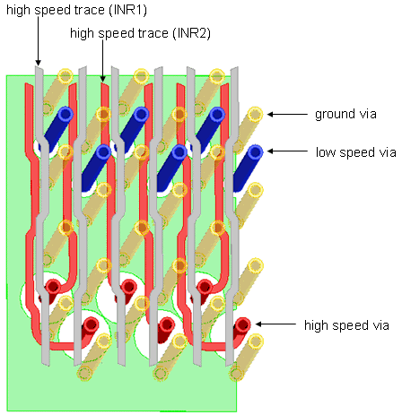
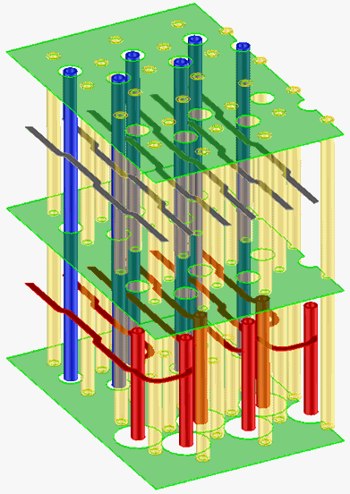

Routing example in 3D
The figures below give an example of the recommended wiggled routing between the vias and over the varying ground clearances.
By carefully dimensioning the ground clearances and by careful assignment of specific traces to specific layers, the crosstalk risk is minimized.
In the first figure below, the top two ground layers were omitted for greater visibility.

The next figure below clearly shows all three ground layers. It also shows the back drilling of the red high-speed signal vias and the wide ground clearances underneath the via-stripline transition (INR2).
Note that the distance between the ground layers is expanded by a factor of about 10 and is not to scale.

Functional changes
- Introduced before SmarTest 6.3.2